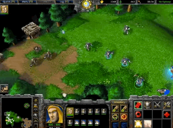
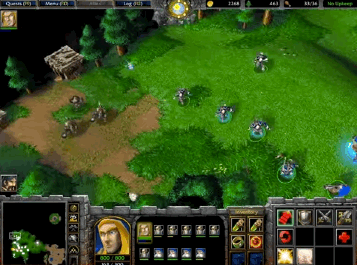
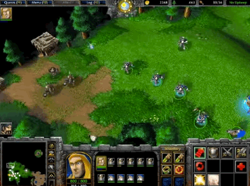

Warcraft 3 is a real time strategy game (RTS) developed and published by blizzard entertainment released in july 2002. It is the second sequel to Warcraft: Orcs & Humans, after Warcraft II: Tides of Darkness, the third game set in the Warcraft fictional universe, and the first to be rendered in three dimensions. An expansion pack, The Frozen Throne, was released in July 2003.
In the game, as in many real-time strategy (RTS) games, players collect resources, train individual units and heroes, and build bases in order to achieve various goals (in single-player mode), or to defeat the enemy player.
Click here
to know more about humans
Click here
to know more about orcs
Four playable factions can be chosen from: Humans, Orcs, (both of which appeared in the previous games) and two new factions: the Night Elves and the Undead. Warcraft III's single-player campaign is laid out similarly to that of StarCraft, and is told through the races in a progressive manner.
